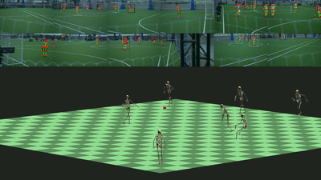

研究プロジェクト
|  |
Synergetic Reconstruction from 2D Pose and 3D Motion for Wide-Space Multi-Person Video Motion Capture in the Wild |
||
 |
VMocap: realtime video motion capture and analysis of human movements |
||
 |
Video Motion Capture from the Part Confidence Maps of Multi-Camera Images by Spatiotemporal Filtering Using the Human Skeletal Model |
経歴
- 2021年1月 - 現在: ソニー株式会社 R&Dセンター 基盤技術研究開発フィールド Tokyo Laboratory 19
- 2018年11月 - 2020年12月: 東京大学 大学院情報理工学系研究科 知能機械情報学専攻 共同研究員
- 2018年4月 - 2020年12月: 株式会社 NTTドコモ R&Dイノベーション本部 サービスイノベーション部
- 2016年10月 - 2017年3月: ミュンヘン工科大学, Dept. of Electrical Engineering and Information Technology, 交換留学
- 2015年10月 - 2018年3月: 東京大学 大学院情報理工学系研究科 知能機械情報学専攻 修士課程
- 2015年4月 - 2015年9月: 東京工業大学 大学院理工学系研究科 機械制御システム専攻
- 2011年4月 - 2015年3月: 東京工業大学 工学部 機械宇宙学科
学位
-
修士 (情報理工学) 2018年3月
- 東京大学 大学院情報理工学系研究科
- 指導教員: 中村仁彦 教授
- 学士 (工学) 2015年3月
- 東京工業大学 工学部
- 指導教員: 山本貴富喜 准教授
受賞
メディア掲載
- 『子供の科学 4月号』: 複数人のモーションキャプチャをカメラ映像だけで行う!?, 2020 [Link]
- ITmedia NEWS (Seamless): カメラ映像から複数人の動きを骨格・筋レベルで同時検出 東大とドコモがモーションキャプチャ技術発表, 2020 [Link]
- 日経 xTECH special: あと１年に迫った5Gサービス開始 ドコモのイベントで未来を探ってみた, 2019 [Link]
- 毎日新聞: ＡＩで全身運動を即座に可視化 東大チーム開発, 2018 [Link]
- Seamless: 東京大学など、複数台のRGBカメラだけから人のモーションキャプチャをリアルタイムに行う技術「VMocap」を発表, 2018 [Link]
その他